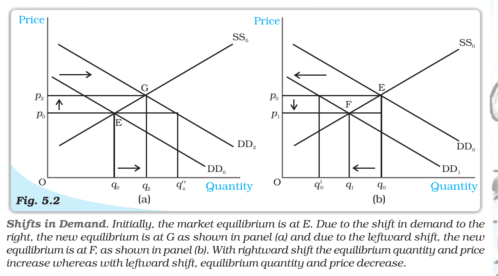
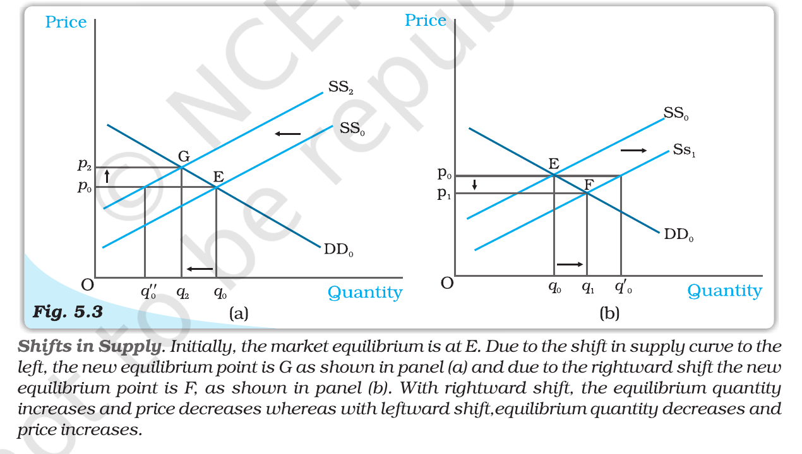

Inflation: Causes, Measurement, Effects and Control
Handout only: no class slidesHandout pages 1-16Handout quotes no PYQsPYQ sheets: 13 Prelims · 1 Mains · Medium
Price versus price level, AD and AS, demand-pull and cost-push causes, how inflation is measured and indexed, CPI and WPI, the 2024 base-year CPI, headline, core and skewflation, hyperinflation, stagflation and the Phillips curve, who gains and loses, fiscal drag, and why control works through the cost of money.
🧠 Understand it firstPicture a crowd of people. One tall person does not make the crowd tall. Inflation means the whole crowd is growing taller: the overall cost of what people buy keeps rising. A single dearer good (say tomatoes) is not inflation by itself.
✏ ExampleThe handout’s contrast: an agricultural labourer in Odisha and a new joiner in a Bengaluru startup buy very different baskets, so each feels inflation differently. That is why we track one fixed “normative basket” for a group.
Inflation is a general rise in prices or the price level. A rise in the price of one good may cause inflation but is not inflation by itself. People feel inflation when the overall value of the basket they buy goes up. Each person has a different basket, so the experience differs (the handout asks how an agricultural labourer in Odisha feels it versus a new joiner in a Bengaluru startup).
Price is the value at which a single good is exchanged, set by that good’s demand and supply.
Prices (the price level) are set by Aggregate Demand (AD) and Aggregate Supply (AS).
We cannot measure inflation for each person. We track a normative basket reflecting the consumption pattern of a specific group.
📘 From NCERT · XII Macro Ch 1 (Introduction), XII Micro Ch 1 §1.5, XI Ch 2 (price as a signal), XI Glossary
In plain words: The handout says one dearer good is not inflation. NCERT explains why economists talk about “the price level” at all, and how one price differs from it. Read the three small steps; each is two or three lines.
Link to the handout: Handout section 1: “Price = one good; price level = AD and AS”. NCERT’s “price of one good” is the handout’s “price”; NCERT’s “general price level” is the handout’s “price level”.
Step 1 · Prices of different goods tend to move together
NCERT (XII Macro Ch 1): “prices of different goods and services generally have a tendency to rise or fall simultaneously”. So macroeconomics can think of one imaginary representative good whose price stands for the general price level.
When prices are going up fast “in what is called an inflation”, the direction of movement is usually the same for all the individual commodities as for the economy as a whole.
Step 2 · Micro looks at one price; macro asks “why do prices rise?”
XII Micro Ch 1: in microeconomics we study how price and quantity are fixed in one market. In macroeconomics we study aggregate measures: total output, employment and the aggregate price level. One of its questions: “Why do prices rise?”
XII Macro Ch 1: for microeconomics, inflation or unemployment were either not mentioned or taken as given. They are not variables that individual buyers or sellers can change.
Who can act on them? NCERT: macroeconomic policies are pursued by the State itself or by statutory bodies like the RBI and SEBI, each with public goals set by law, not private profit.
Step 3 · A single price is a signal (XI Ch 2)
If a good becomes scarce, its price rises. The rise is a signal that less is available, and gives users an incentive to use it with greater care.
NCERT’s example: the price of water goes up because of lower supply, so people stop watering the garden. Likewise a petrol price rise reflects greater scarcity and encourages using less petrol or looking for alternate fuels.
NCERT’s glossary definition (XI Glossary)
Inflation: “A sustained rise in the general price level.”
NCERT differs: NCERT’s glossary says a sustained rise in the general price level; the handout says a general rise in prices or the price level. Same idea. Use the handout’s words and add “sustained” if you wish. (handout/teacher wins in class)
⭐ RememberONE price up ≠ inflation. Inflation = the whole basket (price level) up.
🧠 Understand it firstAD is everybody’s shopping list added up, in rupees. AS is everything farms and factories can put on the shelves. When the shopping list is longer than the shelves, shops raise prices; when shelves overflow, prices ease. The price level sits where the two meet.
✏ ExampleThink of a school canteen. 100 students want samosas (AD) but the kitchen makes only 60 (AS). The canteen raises the price. Same idea for a whole economy (practice picture, not from the handout).
📐 Formulas of this section
Price rule
AD > AS ⇒ price level ↑
either AD rises or AS falls (handout key rule)
Link to price level
AD: price ↑ ⇒ demand ↓ · AS: price ↑ ⇒ supply ↑
AD inversely, AS positively related to the price level
Aggregate Demand versus Aggregate Supply
Aggregate Demand (AD)
Aggregate Supply (AS)
Meaning
Total demand for all goods and services in the economy, which domestic producers are required to meet
Total supply of all goods and services, what all producers produce combined
Depends on
General price level; incomes; spending habits (culture of spending); availability of money (easy loans); size of population
General price level; availability of basic raw materials (coal, iron, oil); skill level of the population; investment in infrastructure, capital goods and R&D
Link to price level
Inversely related: if things become expensive, people demand less
Rises with price level: producers have an incentive to produce more (but inputs eventually run out)
Handout figure The teacher’s sketches in the handout. Top left: equilibrium price level at a given level of GDP (AD meets AS). Top right: increase in price due to AD up, so higher price and higher demand (AD0 to AD1, Y0 to Y1). Bottom: prices rise due to a fall in AS, so higher price and lower production (AS0 to AS1, Y1 below Y0).
Handout figure Demand-side inflation: AD shifts right (demand-pull). Supply-side inflation: AS shifts left (cost-push).
📘 From NCERT · XII Macro Ch 4 §4.3 and §4.4 (price level fixed first; excess and deficient demand)
In plain words: The handout rule is “prices rise when AD exceeds AS”. NCERT says the same thing in its own words (excess demand) and explains why its first model keeps the price level fixed, so you do not get confused when a NCERT diagram shows no price at all.
Link to the handout: Handout: AD > AS ⇒ prices rise. NCERT: excess demand ⇒ rise in prices. “Full employment output” is the output when all factors are fully employed.
Step 1 · Why NCERT first keeps the price level fixed
NCERT builds the theory in two steps: (1) find the macroeconomic equilibrium taking the price level as fixed; (2) then let the price level vary.
Reason (i): at the first stage the economy has unused resources: machineries, buildings and labours. The law of diminishing returns does not apply, so extra output can be produced without increasing marginal cost, and the price level does not change when the quantity changes. Reason (ii): it is a simplifying assumption that will be changed later.
Step 2 · Equilibrium output against full-employment output
NCERT’s caution: equilibrium (Y = AD) by itself does not mean full employment. It only means income will not change if left to itself, even with unemployment.
Where equilibrium output stands
NCERT’s name
What it does to prices “in the long run”
Less than full-employment output (demand not enough to employ all factors)
Deficient demand
Leads to a decline in prices
More than full-employment output (demand more than the output produced at full employment)
Excess demand
Leads to a rise in prices
NCERT differs: NCERT says excess demand raises prices “in the long run”. The handout (teacher) says prices rise when AD exceeds AS. Same direction; use the handout rule in the answer. (handout/teacher wins in class)
⭐ RememberAD chases AS. AD > AS → prices rise. Two ways: AD up, or AS down.
🧠 Understand it firstThere are only two roads to dearer goods. PULL: buyers have more money or more wish to spend, so the AD curve slides right. PUSH: it becomes costlier or harder to produce, so the AS curve slides left. Cartels, hoarding, black money and shocks from abroad ride on top of these two.
✏ ExamplePull: a salary hike plus cheap loans means more car and phone buying, so prices drift up. Push: war cuts oil supply, fuel is a cost for every producer, so everything gets dearer (the handout stresses oil producers and import dependence).
📐 Formulas of this section
Demand-pull
AD shifts right: AD0 → AD1
price ↑ and output ↑ (Y0 → Y1)
Cost-push
AS shifts left: AS0 → AS1
price ↑ and output ↓
Demand and supply factors of any good split into specific factors (taste for ice cream) and general factors (size of population, income levels, availability of money). Causes of inflation are the general factors that shift AD or AS, not the factors of one good.
Demand-side versus supply-side inflation
Demand-pull (AD shifts right)
Cost-push (AS shifts left)
Trigger
Anything that raises AD
Anything that lowers AS or restricts production
Examples
Rising income levels; easy money (lower interest rates, cheaper credit); more government spending; rising population; changing spending habits (less saving, more consumption, usually a secondary effect of higher incomes)
Rising cost or non-availability of basic raw materials (crude, metals, coal); higher cost of factors of production (wages, interest on capital); low investment (poor infrastructure, no capital goods, poor R&D); falling productivity or failure to adopt new skills; poor Ease of Doing Business (compliance, contract enforcement, weak entrepreneurship culture); frequent disasters disrupting supply chains
Other factors named in the handout:
Legal and market distortions: cartelisation (producers collude to act as a monopoly), hoarding (artificial scarcity), widespread black money (untracked cash).
International shocks: geopolitical tension, war, trade sanctions, disasters, especially in countries we import heavily from (oil producers).
Memory aid · Demand-pull: five ways AD shifts right
CHIPS
More CHIPS on the table means more to spend: AD moves right and prices follow.
CCheap credit: easy money, lower interest ratesHHabits: less saving, more consumptionIIncome levels risingPPopulation risingSSpending by government goes up
Memory aid made from the handout's own list; the letters are rearranged, so the order is free.
Memory aid · Cost-push: six ways AS shifts left
PRICED
Why are goods so highly PRICED? Check the six supply-side causes.
PProductivity falls, new skills not adoptedRRaw materials costly or not availableIInvestment low: poor infrastructure, R&DCCost of factors: wages, interest on capitalEEase of Doing Business is poorDDisasters disrupt supply chains
Memory aid made from the handout's own list; the letters are rearranged, so the order is free.
📘 From NCERT · XII Micro Ch 5 §5.1 (Market Equilibrium), Figs 5.2 and 5.3
In plain words: The handout’s AD shift and AS shift pictures copy a simpler picture NCERT draws for one market. Understand it here once: a demand shift and a supply shift move price in the way the handout’s “pull” and “push” do.
Link to the handout: Handout section 3: demand-pull = AD shifts right (price up, output up). Cost-push = AS shifts left (price up, output down). NCERT’s single-market result is the same pattern.
Step 1 · The four shifts in one table (NCERT)
NCERT’s rule: the direction of change of price and quantity is the same whenever demand shifts, and opposite whenever supply shifts.
What shifts
Equilibrium price
Equilibrium quantity
NCERT’s example
Demand curve to the right
Rises
Rises
Higher consumer income for a normal good like clothes; more consumers
Demand curve to the left
Falls
Falls
The opposite shift
Supply curve to the left
Rises
Falls
Rise in the price of an input: marginal cost goes up, so supply at each price is less
Supply curve to the right
Falls
Rises
Increase in the number of firms
Step 2 · Why price rises after a right shift of demand
At the old price p0 there is excess demand. Some individuals are willing to pay a higher price, so the price tends to rise until the new equilibrium G (price p2).
After a left shift of supply there is also excess demand at p0: consumers who cannot get the good are willing to pay more, so the price rises.

NCERT Fig. 5.2, original: shift in demand. Panel (a) is the right shift (E to G, price and quantity up).
Step 3 · The supply side, in NCERT’s own figure

NCERT Fig. 5.3, original: shift in supply. Panel (a) is the left shift (E to G, price up, quantity down).
NCERT differs: NCERT’s curves are for one good (microeconomics). The handout’s AD and AS are for the whole economy; the logic is the same, but they are different curves and should not be mixed in one diagram. (handout/teacher wins in class)
📘 From NCERT · XII Macro Ch 5 §5.3 (deficits and debt), XII Macro Glossary, XI Ch 3 (1991 crisis)
In plain words: The handout lists “more government spending” and “easy money” as demand-pull causes. NCERT adds when a deficit pushes prices up and when it does not, and shows a real case.
Link to the handout: Handout section 3: demand-pull causes (government spending, easy money) and the international-shock list. NCERT gives the condition that decides whether spending turns into inflation.
Step 1 · Are fiscal deficits inflationary? (NCERT’s answer)
One of the main criticisms of deficits is that they are inflationary: when the government increases spending or cuts taxes, aggregate demand increases.
Condition in the economy
What NCERT says happens
Firms cannot produce the higher quantity demanded at the going prices
Prices will have to rise
There are unutilised resources; output is held back by lack of demand
A high fiscal deficit comes with higher demand and greater output, so it need not be inflationary
Step 2 · Borrowing from the central bank
NCERT Glossary: financing a budget deficit by borrowing money from the central bank “leads to increase in money supply in an economy and may result in inflation”.
Step 3 · A real case: India before 1991 (XI Ch 3)
In the late 1980s government expenditure began to exceed its revenue by such large margins that meeting it through borrowings became unsustainable.
Prices of many essential goods rose sharply. Imports grew at a very high rate without matching growth of exports, and foreign exchange reserves fell to a level not adequate to finance imports for more than two weeks.
NCERT lists “rising prices of essential goods” among the reasons for the financial crisis that led to the 1991 reforms.
NCERT differs: The handout names government spending as a cause of demand-pull without any condition. NCERT adds the condition: it raises prices when output cannot rise to meet it. (handout/teacher wins in class)
⭐ RememberPULL = demand shifts RIGHT (price UP, output UP). PUSH = supply shifts LEFT (price UP, output DOWN).
🧠 Understand it firstWe cannot measure inflation for each person, so we fix a typical shopping bag for a group, price it every month, and compare with the same month a year ago. The % change is inflation. Comparing with the same month removes seasonal swings.
✏ ExamplePractice sum (not from the handout): if the same basket cost ₹9,000 in March last year and ₹9,900 now, inflation = (9,900 − 9,000) ÷ 9,000 × 100 = 10%.
📐 Formulas of this section
Inflation (Y-o-Y)
Inflation % = (basket price this month − basket price same month last year) ÷ basket price same month last year × 100
handout: % change in the basket price over the same month of last year
Inflation is the percentage change in prices in the current period over the previous period. It is usually reported year-on-year (Y-o-Y): the current month against the same month of the previous year.
Identify the target group.
Construct a normative basket of goods and services for an average person in that group.
Choose a base year. The basket is built separately for each month to account for seasonality. The importance of each item is its weight (% of total expenditure). Most items stay, some enter and exit, and some weights change.
Collect the prices of the items for each month of the base year to get the basket’s total price.
Collect the prices for the corresponding months of later years to get the new basket price.
Inflation = % change in the basket price in a month of this year over the same month of last year.
Communicate the index value along with the % change over the year.
🧠 Understand it firstA raw basket price like ₹11,345 means nothing. So we rescale the base-year basket to a clean 100. Later prices become readable at once: 150 means 50% dearer than the base year, 165 means 65% dearer. The base also gives a fixed yardstick, not a moving one.
✏ ExampleThe handout’s numbers: base March 2015 ₹10,000 (index 100); March 2025 ₹15,000 (index 150); March 2026 ₹16,500 (index 165). Inflation in the last year = (16,500 − 15,000) ÷ 15,000 = 10%. Prices are 65% above 2015.
📐 Formulas of this section
Index
Index = (100 ÷ base-year basket price) × current basket price
If the government only said “prices are 4.3% higher than last year”, last year would become a moving benchmark. People need a fixed base. Also, the raw basket price (like ₹11,345 and ₹18,967) is a meaningless number for a normative basket. So the base-year basket price is set to a clean value, usually 100.
The handout’s example
Period
Basket price
Index value
Base year (March 2015)
₹10,000
100
March 2025
₹15,000
(100 ÷ 10,000) × 15,000 = 150
March 2026
₹16,500
(100 ÷ 10,000) × 16,500 = 165
Inflation (March 2026 over March 2025) = (16,500 − 15,000) ÷ 15,000 × 100 = 10%.
An index of 165 means prices are 65% higher than in the 2015 base year.
The base year here gives a constant basket to compare the cost of living; in Real GDP the base year gives constant prices to value output.
📘 From NCERT · XII Macro Ch 2 §2.4 (Nominal and real GDP; CPI; GDP deflator)
In plain words: The handout’s index rule is “(100 ÷ base basket price) × current basket price”. NCERT shows the same ratio with a tiny two-item basket, so you can see every step. It also introduces a second price index, the GDP deflator, which uses the base year in the way the handout’s last bullet mentions.
Link to the handout: Handout section 5: index = (100 ÷ base-year price) × current price; base year = constant basket. NCERT calls this ratio the Consumer Price Index (CPI). The handout’s last bullet: in Real GDP the base year gives constant prices. NCERT shows that now.
Step 1 · NCERT’s CPI recipe
Work out the cost of buying a given basket of commodities in the base year.
Work out the cost of buying the same basket in the current year.
Express the second as a percentage of the first.
CPI (NCERT)
CPI = cost of basket in current year ÷ cost of basket in base year × 100
the same ratio as the handout’s index
Step 2 · NCERT’s worked example (representative consumer buys 90 kg rice and 5 pieces of cloth a year)
CPI = 1,950 ÷ 1,400 × 100 = 139.29 (approximately), as printed in NCERT. Read it exactly as the handout reads 165: prices are about 39% above the base year (arithmetic: 139.29 − 100).
Item
Quantity
Price 2000
Price 2005
Spend 2000
Spend 2005
Rice
90 kg
₹10
₹15
₹900
₹1,350
Cloth
5 pieces
₹100
₹120
₹500
₹600
Total
₹1,400
₹1,950
Step 3 · Why real GDP is needed (nominal against real)
If GDP doubles, production may have doubled, or only prices may have doubled. So NCERT compares GDP at constant prices (real GDP). Nominal GDP is GDP at current prevailing prices.
The base year is the year whose prices are used to work out real GDP.
NCERT’s bread economy
Units of bread
Price per bread
Nominal GDP
Real GDP (at year 2000 prices)
Year 2000 (base year)
100
₹10
₹1,000
₹1,000 (same as nominal in the base year; worked out here)
Year 2001
110
₹15
₹1,650 (110 × ₹15)
₹1,100 (110 × ₹10)
Step 4 · GDP deflator: a price index from the same two numbers
The ratio of nominal to real GDP shows how prices moved from the base year to the current year. NCERT: 150 per cent means the price of bread in 2001 was 1.5 times the price in 2000, which is true (₹10 to ₹15).
Practice (NCERT Exercise 11): nominal GNP ₹2,500 crore; GNP at base-year prices ₹3,000 crore. GNP deflator = 2,500 ÷ 3,000 × 100 = 83.33 per cent (worked out here). It is below 100, so the price level has not risen since the base year; it has fallen.
GDP deflator
GDP deflator = nominal GDP ÷ real GDP (× 100 for per cent)
NCERT: 1,650 ÷ 1,100 = 1.50 = 150 per cent
NCERT differs: NCERT’s glossary defines CPI as the “Percentage change in the weighted average price level”, but NCERT’s own chapter text defines CPI as an index (139.29). That is an internal mismatch in NCERT. Use the handout: the index is the level; inflation is the % change of the index over the same month last year. (handout/teacher wins in class)
NCERT differs: NCERT’s example compares year 2000 with year 2005 with one yearly basket. The handout builds a basket for each month (for seasons) and quotes Y-o-Y inflation. Handout wins for method. (handout/teacher wins in class)
⭐ RememberIndex − 100 = % rise since the base year. Inflation = % change of the index over the same month last year.
🧠 Understand it firstDifferent yardsticks for different questions. CPI follows what households pay in shops (retail). WPI follows prices in bulk trade between businesses. CPI-AL and CPI-IW follow farm labourers and factory workers. A PPI would follow what producers receive, but India has none yet.
✏ ExampleIn Feb 2026 the new CPI (2024 = 100) widened the basket: 299 → 358 items, OTT subscriptions and e-commerce prices came in, VCRs and CDs went out. Food’s weight fell from 45.86% to 36.75% (Engel’s Law at work).
Common inflation indices
Index
Variants
Released by
CPI
CPI-Rural, CPI-Urban, CPI-Combined (CPI-C)
National Statistical Office (NSO) under MoSPI
CPI-AL and CPI-IW
Agricultural Labourers; Industrial Workers
Labour Bureau (Ministry of Labour and Employment)
WPI
Wholesale Price Index
Office of the Economic Adviser (OEA), Department for Promotion of Industry and Internal Trade (DPIIT), Ministry of Commerce and Industry
A working group chaired by Prof. Ramesh Chand was constituted to revise the WPI base year from 2011-12 to 2022-23, and to recommend a roadmap to switch from WPI to a Producer Price Index (PPI).
India has no official PPI. So in 2017 WPI was adjusted to sit closer to basic prices / factor cost by removing indirect taxes, bringing it nearer to producers’ realised prices.
Who releases which index
In Feb 2026 MoSPI released the new 2024 = 100 base-year series, a structural overhaul, not a routine weight change:
2012 series versus 2024 series (as given in the handout)
Change
2012 series
2024 series
Breakup of “Miscellaneous”
6 groups; a giant “Miscellaneous” bucket (doctor visits, bus fares, school fees) with 28.32% weight
12 divisions under the UN COICOP 2018 framework; Transport, Health, Education and Communications tracked separately
Engel’s Law (food loses its crown)
Food and Beverages weight 45.86%
36.75%. Food is volatile (onion, tomato spikes), so headline inflation should be less volatile and give the RBI a clearer demand signal
Digital and service economy
299 items
358 items. Removed: VCRs, tape recorders, CDs. Added: OTT subscriptions, pen drives, attendant/babysitter services, pet products. For the first time, prices scraped from 12 major e-commerce platforms;Rural House Rent introduced
📘 From NCERT · XII Macro Ch 2 §2.4 (retail and wholesale price; CPI, WPI, PPI; why they differ from the deflator), XII Macro Glossary
In plain words: The handout lists the Indian indices and who releases them. NCERT explains the idea behind CPI and WPI (retail against wholesale) and gives three reasons why a CPI is not the same as the GDP deflator.
Link to the handout: Handout section 6: CPI, CPI-AL and CPI-IW, WPI, and “India has no official PPI”. NCERT does not name the release bodies, CPI-AL, CPI-IW or the 2024 series: learn those from the handout only.
Step 1 · Retail price against wholesale price
Many commodities have two sets of prices: the retail price the consumer actually pays, and the wholesale price at which goods are traded in bulk. They can differ because of the margin kept by traders.
Goods traded in bulk (such as raw materials or semi-finished goods) are not purchased by ordinary consumers.
Like CPI, the index for wholesale prices is the Wholesale Price Index (WPI). NCERT: in countries like the USA it is called the Producer Price Index (PPI).
Index
Basket, in NCERT’s glossary
Consumer Price Index (CPI)
A given basket of consumption goods
Wholesale Price Index (WPI)
A given basket of goods traded in bulk
GDP deflator
Ratio of nominal to real GDP
Step 2 · Why CPI (or WPI) differs from the GDP deflator
#
Reason (NCERT)
In plain words
1
Goods bought by consumers are not all the goods produced; the deflator takes all goods and services
CPI covers a shopping bag; the deflator covers everything the country produces
2
CPI includes prices of imported goods consumers buy; the deflator does not include prices of imported goods
A dearer imported phone shows in CPI, not in the deflator
3
Weights are constant in CPI; in the deflator they differ with the production level of each good
CPI keeps one fixed basket; the deflator’s mix follows what is produced
NCERT differs: NCERT says CPI weights are constant. The handout shows weights and items being revised when a new base-year series starts (food 45.86% to 36.75%, 299 to 358 items). Read NCERT’s “constant” as “fixed for one base-year series” (this is a reading, not an NCERT sentence). (handout/teacher wins in class)
NCERT differs: NCERT’s glossary again says CPI and WPI are “Percentage change in the weighted average price level”; the chapter text calls them indices. Use the index meaning. (handout/teacher wins in class)
🧠 Understand it firstTerms are different lenses on the same price rise. Headline shows everything. Core removes volatile food and fuel to show the underlying trend. Super core removes even more. Skewflation is one or two items spiking. “Dis-” means slower, “De-” means down. Stagnation words (recession, depression) describe output, not prices.
✏ ExampleTrap to remember: petrol and diesel are NOT in “Fuel and Light”; the handout puts them under Transport and Communication, so they stay inside core. They leave only at super core.
📐 Formulas of this section
Core inflation
Core = Headline − food − fuel (Fuel and Light)
petrol and diesel stay inside core
Super core
Super core = Headline − food − fuel − petrol − diesel − precious metals
handout: truest picture of underlying demand
Recession rule
output falls for 2 consecutive quarters
a rule of thumb (NBER looks at broader data)
Hyperinflation (Cagan)
more than 50% per month
no consensus on the line between high and hyper
Headline, skewflation, core, structural
Types of inflation measure
Term
Meaning in the handout
Notes and trap
Headline inflation
Overall inflation = CPI-C. What the news reports
Adopted as the primary anchor of Inflation Targeting in 2015. Shift from WPI to CPI-C recommended by the Urjit Patel Committee, 2014. Target set by the Monetary Policy Framework Agreement at 4%, tolerance ±2%
Skewflation
Inflation driven by a few items rising fast while most stay stable. “Skew” means bent or asymmetrical
Gained prominence in India around 2009-2010 (Economic Survey): onions and pulses spiked while manufactured goods stayed cheap
Core inflation
Headline minus highly volatile items (food and fuel) that authorities cannot immediately control. Also non-food, non-fuel inflation
NSO calculates headline; food and fuel are removed to reach core; RBI calculates the value.Petrol and diesel for vehicles are inside core (under Transport and Communication within Miscellaneous), not in “Fuel and Light”; their prices are controlled through taxation
Super core / refined core
Headline minus food, fuel, petrol, diesel and precious metals
Truest picture of underlying demand
Structural inflation
Caused by structural features (poor infrastructure, bad EODB, skill deficits, supply-chain bottlenecks) that take long to fix
Handout example: political complexity blocks agriculture supply-chain reform, so the current system stays inherently inflationary
Hyperinflation, deflation, disinflation
Hyperinflation: runaway, exceptionally high inflation (galloping, trotting). Costs: shoe-leather costs (running to the bank before money loses value) and menu costs (constantly updating prices).
There is no consensus on the criteria separating high from hyper. Phillip Cagan: more than 50% per month. Examples: Weimar Germany (1923), Zimbabwe (2008). It is commonly understood as the rate beyond people’s normal capacity to bear: the US normal is 1-2%, so 6% looks “hyper” there; India’s normal over two decades is 5-6%, so even 9% is “high”, not “hyper”; Turkey has had 80-100%.
Deflation: a fall in prices (negative inflation). Disinflation: a fall in the rate of inflation; prices still rise, but slower, largely a result of base effect. Continued disinflation may become deflation.
Japan is the famous modern deflation example: “Lost Decades” since the 1990s; consumers delayed purchases expecting cheaper goods tomorrow.
Recession, depression, shrinkflation
Contraction terms
Term
Meaning
Note
Recession
Contraction in output for two consecutive quarters
A rule of thumb. The US NBER looks at broader metrics (employment, industrial production, wholesale-retail sales) to declare one
Depression
Severe, prolonged contraction; the economy cannot get back to its original output
No objective criterion. Great Depression (1929): US GDP fell by nearly 30%, unemployment hit 25%. “A recession is a speed bump; a depression is a crater”
Shrinkflation
Size or quantity of a good shrinks while the packet price stays the same
Rampant in FMCG. Handout examples: Parle-G, Maggi cutting grammage to hold the ₹5 or ₹10 price point
⭐ RememberDis- = the RATE slows. De- = the LEVEL falls. Core = headline − food − fuel.
🧠 Memory aid · The ladder of measures, narrow to narrower (an order)
Hot Chai Soothes
HHeadline (all items, CPI-C)CCore (minus food and fuel)SSuper core (also minus petrol, diesel, precious metals)
Own memory aid: each step peels off more volatile items.
🧠 Understand it firstPrices and wages can chase each other in a loop: dearer goods, higher wage demands, dearer goods again. Expectations matter too: if everyone expects prices to rise, they stock up today and prices do rise. Normally a country picks between inflation and unemployment (the Phillips Curve). Stagflation is the nightmare: both are bad at once.
✏ ExampleWhy stagflation paralyses a policy maker: boosting demand to cut unemployment worsens inflation; cooling demand to cut inflation worsens unemployment. Neither lever helps.
📐 Formulas of this section
Stagflation
Stagflation = stagnation (low growth, high unemployment) + high inflation
both adverse at once
Phillips Curve
inflation ↑ ⇔ unemployment ↓ (inverse)
A.W. Phillips, UK 1861-1957
Price-wage spiral: prices rise, workers demand higher wages, firms pass the wage cost to consumers, a continuous positive feedback loop.
Inflation expectations: a self-fulfilling prophecy. If people expect prices to rise, panic-buying today creates shortages and prices actually rise.
Reflation: the government induces inflation (stimulus cheques, tax cuts, lower interest rates) to boost AD and reduce unemployment after a recession or deflation.
Normally there is a trade-off: fast growth (low unemployment) comes with high inflation, and slow growth (high unemployment) comes with low inflation. This comes from the Phillips Curve:A.W. Phillips studied the UK from 1861 to 1957 and found an inverse relation between inflation (wage growth) and unemployment. Points where both were low, or both high, were outliers; the both-high points are the periods of stagflation.
If inflation is very high, unemployment is probably low, so the policy maker will pay the price of a slight rise in UE to cut inflation. If UE is very high, prices are probably low, so a rise in prices is a bearable cost to cut UE.
Stagflation breaks the Phillips Curve: pursuing either goal worsens the other, which creates policy uncertainty and paralysis.
⭐ RememberPhillips Curve = inverse (low UE, high inflation). Stagflation = off the curve: both high.
🧠 Understand it firstInflation is a quiet tax on money: ₹110 this year buys only what ₹100 bought last year. Whoever owes money gains, because the debt is repaid with weaker rupees; whoever is owed loses. What the lender truly earns is the nominal rate minus inflation.
✏ ExampleHandout example: lend at 10% when inflation is 7%, so the lender is richer by only 10 − 7 = 3% in real terms. Deposits paying 2-3% do not beat inflation, so depositors’ real return is negative. Cash at home loses value at the rate of inflation.
📐 Formulas of this section
Real interest rate
RIR = NIR − Inflation
handout: 10% − 7% = 3%
Floating rate (banks)
NIR = RIR + Inflation
RIR fixed, NIR moves with inflation
Keeping your worth
extra needed = inflation %
with 10% inflation ₹110 buys what ₹100 bought last year
Time value of money and real return
Inflation erodes money’s value. If ₹100 bought 1 kg of apples and apples now cost ₹110, ₹1 has gone from 1/100 kg to 1/110 kg. With 10% inflation, ₹110 this year buys what ₹100 bought last year. Someone with ₹105 is nominally richer but poorer in real terms. You need exactly inflation% extra to keep your worth.
Who gains and who loses
Group
Effect
Why
Borrowers
Benefit
Inflation eats into the lender’s return and helps shoulder the borrower’s burden
Lenders (banks)
Lose, unless protected
Banks protect themselves by (a) charging a high NIR that stays above inflation, or (b) using a floating rate: RIR fixed, NIR = RIR + inflation
Depositors
Lose
They are lenders to banks with no bargaining power. Deposit rates (the handout says a meagre 2-3%) do not beat inflation, so the real return is generally negative. Even fixed deposits hardly beat inflation. This does not mean keep cash at home: cash loses value at the rate of inflation
Consumers
Lose
Money loses purchasing power
Producers
Generally benefit
Depends on pricing power: necessities have inelastic demand but more competition; luxuries have elastic demand but less competition. Most producers can pass on the rise, so profit margins expand
Who gains and who loses
📘 From NCERT · XII Macro Ch 3 §3.1 (value of money), XII Macro Ch 6 §6.3 (PPP, Example 6.1, Exercise 15)
In plain words: The handout shows inflation shrinking what money buys, with apples. NCERT gives the same idea as a one-line formula, and adds an effect the handout skips: what inflation does to the exchange rate in the long run.
Link to the handout: Handout section 9: ₹100 bought 1 kg of apples, now ₹110. NCERT’s “purchasing power of money” is the same thing.
Step 1 · The value of money falls when the price level rises
If prices of all commodities increase in terms of money (a general increase in the price level), the value of money in terms of any commodity has decreased: a unit of money now buys less. NCERT calls this a deterioration in the purchasing power of money.
Money can store value only if its own value is sufficiently stable. “A rising price level may erode the purchasing power of money.”
Step 2 · Inflation and the exchange rate in the long run (PPP theory)
NCERT: over the long run, exchange rates between two currencies adjust to reflect differences in the price levels of the two countries, so the same product costs the same in rupees in India or dollars in the US (ignoring transport, and with no tariffs or quotas).
NCERT Example 6.1: a shirt
Price in the US
Price in India
Exchange rate that equalises them
Start
$8
₹400
₹50 per dollar
After prices rise 20 per cent in India and 50 per cent in the US
$12
₹480
$12 must be worth ₹480, so ₹40 per dollar: the dollar has depreciated
Step 3 · NCERT’s practice question (Exercise 15)
Rate ₹30 = $1 in 2010. Prices double in India over 20 years and stay fixed in the USA. By the PPP idea the rate in 2030 is 30 × 2 = ₹60 per dollar (worked out here): the rupee is weaker because India’s prices rose.
NCERT differs: The handout’s effects of inflation are all domestic (borrowers, lenders, depositors, consumers, producers). The exchange-rate effect is NCERT-only; add it as an extra point in a Mains answer. (handout/teacher wins in class)
LLenders / banks lose (unless protected)DDepositors lose (real return negative)CConsumers lose (money buys less)BBorrowers gainPProducers gain (they can pass the rise on)
Own memory aid: the five groups from the handout table. The order is free.
10 · Is inflation desirable? Engel’s Law and the poor#
🧠 Understand it firstZero or falling prices are not the goal. A little steady inflation keeps firms profitable, so they invest, hire and raise wages. Stability also stops people from putting off buying. But the poor suffer most: they spend most of their income on food, whose prices swing and whose sellers can pass price rises on.
✏ ExampleEngel’s Law: as income rises, the SHARE of income spent on food falls even if the rupee amount rises. A household with ₹10,000 a month that spends ₹7,000 on food feels a food-price jump far more than one that spends a small share on food (practice picture, not from the handout).
📐 Formulas of this section
Engel’s Law
income ↑ ⇒ % of income spent on food ↓
even if rupees spent on food rise
As a consumer you might prefer deflation, but a healthy economy needs low and stable inflation. Low inflation within people’s tolerance keeps producers profitable so they invest, expand capacity, pay higher wages and create jobs. Stability brings predictability and stops people delaying decisions.
🧠 Understand it firstWhen prices rise, the government collects more tax without passing any new law. Indirect taxes are mostly a % of value, so they collect more. A worker whose pay rises with inflation moves into a higher slab and pays a bigger share as tax. Real take-home grows less than pay, spending falls, and prices cool by themselves.
✏ ExampleHandout table at 20% inflation: income ₹9 L → ₹10.8 L; tax ₹1.1 L → ₹1.41 L (up 28.2%); take-home ₹7.9 L → ₹9.39 L (up 18.8%, less than 20%).
📐 Formulas of this section
Tax at ₹9 L
₹50,000 + ₹60,000 = ₹1.1 L
10% on first 5 L; 15% on next 4 L (hypothetical slabs)
Tax at ₹10.8 L
₹50,000 + ₹75,000 + ₹16,000 = ₹1.41 L
20% on the last 80k
Disposable income
income − tax: 9 − 1.1 = ₹7.9 L; 10.8 − 1.41 = ₹9.39 L
handout table
Fiscal drag
income +20% ⇒ tax +28.2%, post-tax income +18.8%
no new law; AD falls; prices cool
In inflation the government collects more direct and indirect taxes. Indirect taxes are mostly ad valorem (on the value of goods), so the same rate collects more. Direct taxes: a worker who negotiates a raise equal to inflation is pushed into a higher bracket under progressive taxation.
The handout’s hypothetical (inflation 20%)
Income ₹9 L
Income ₹10.8 L (+20%)
Slabs (hypothetical)
0-5 L at 10%; 5-10 L at 15%; 10-30 L at 20%; 30 L+ at 25%
Same slabs
Tax
₹50,000 on first 5 L + ₹60,000 on next 4 L = ₹1.1 L
₹50,000 + ₹75,000 on next 5 L + ₹16,000 on next 80k = ₹1.41 L
Disposable income
9 − 1.1 = ₹7.9 L
10.8 − 1.41 = ₹9.39 L
Change
Post-tax income up 18.8%
Tax outgo up 28.2%
Nominal income rose by the full inflation rate (20%), but real disposable income rose only about 18-19%. People pay a larger share of their increment as tax. No new tax was imposed; the system does it automatically. People realise they are poorer, cut spending, AD falls and prices cool without the government acting. This automatic cooling is fiscal drag, acting as an automatic stabiliser.
📘 From NCERT · XII Macro Ch 5 §5.1.2 and §5.3 (progressive tax; automatic stabilisers), Key Concepts
In plain words: The handout calls fiscal drag an “automatic stabiliser”. NCERT defines that term. It uses a different tax example, so first see NCERT’s idea, then match it to the handout’s slabs.
Link to the handout: Handout section 11: higher slabs mean more tax on the extra income, so spending is cut automatically. NCERT: a tax that takes a part of every rupee of extra income acts as a shock absorber.
Step 1 · What an automatic stabiliser is (NCERT)
NCERT: a proportional income tax acts as an automatic stabiliser, a shock absorber, because it makes disposable income, and thus consumer spending, less sensitive to fluctuations in GDP.
Phase
What happens
GDP rises
Disposable income also rises but by less than GDP, because a part is siphoned off as taxes. This limits the upward fluctuation in consumption spending
Recession (GDP falls)
Disposable income falls less sharply, so consumption does not drop as much and the fall in aggregate demand is reduced
Step 2 · Automatic against deliberate
Built-in stabilisers work “without the need for any decision-maker to take action”; they work automatically. Welfare transfers also help stabilise income.
Deliberate action to stabilise the economy (changing government spending or taxes) is called discretionary fiscal policy.
NCERT’s caution: built-in stabilisers reduce only part of the fluctuation; the rest must be taken care of by deliberate policy.
Step 3 · Progressive tax (the handout’s slabs)
NCERT: redistribution is sought through progressive income taxation, in which the higher the income, the higher the tax rate. Firms are taxed on a proportional basis, a particular proportion of profits.
NCERT differs: NCERT’s example of a stabiliser is a proportional tax, and it explains the effect on a recession as well. The handout’s fiscal drag works through progressive slabs in an inflation. NCERT does not use the term “fiscal drag”. Use the handout’s term and quote NCERT’s “automatic stabiliser”. (handout/teacher wins in class)
⭐ RememberFiscal drag = inflation pushes you into higher slabs = automatic stabiliser (AD falls, prices cool).
🧠 Understand it firstWe cannot find the exact cause quickly, and fixing roads, ports and the business climate takes years. So the cure must work whatever the cause: cut AD. AD is spending, and spending needs money. If money becomes expensive (higher interest rate), savers save more and borrowers borrow less, so AD falls and prices cool.
✏ ExampleHandout: a loan of ₹1 lakh at 8%. Raise the rate to 10%: those with money save it for the higher interest, those without cannot afford to borrow. Both cut demand.
📐 Formulas of this section
Cure logic
cost of money ↑ ⇒ spending ↓ ⇒ AD ↓ ⇒ prices cool
handout: loan of ₹1 lakh at 8% → 10%
Two problems: (1) identifying the cause (price is the collective outcome of many intertwined factors); (2) the ability to fix it (you cannot build roads and ports, or attract capital, in a year). Structural fixes (infrastructure, import resilience, EODB) are necessary but come too late. The solution must be effective and agnostic of the cause.
Inflation is a consequence of AD exceeding AS. Bring down AD and prices cool. AD is expenditure using money. If money becomes expensive, people hold on to it and spend less.
The cost of money is the interest rate (a loan of ₹1 lakh at 8%). Raise it from 8% to 10%: those with money save it for the higher interest, those without cannot afford to borrow. Both reduce demand, AD cools and prices fall.
The price of money, like any price, depends on its demand and supply. Reduce the supply of money and its cost rises. Who does this and how is the next chapter: money, its demand and supply, and monetary policy.
The handout’s logic for controlling inflation
AD exceeds AS
Prices rise
Raise the cost of money
Interest rate up (8% → 10%)
Savers save, borrowers borrow less
Spending falls
AD falls
Prices cool
📘 From NCERT · XII Macro Ch 5 §5.1.1 (stabilisation function), XI Ch 3 (stabilisation measures), XI Glossary
In plain words: The handout’s cure is one idea: make money expensive. NCERT shows two more pieces of the picture: the government’s stabilisation job, and India’s own short-term measures in 1991. The tools of the RBI itself are in the Chapter 8 NCERT boxes.
Link to the handout: Handout section 12: bring AD down, whatever the cause; structural fixes come too late. NCERT’s “stabilisation” (short term) and “structural” (long term) are the same split.
Step 1 · The stabilisation function of the budget (NCERT)
If demand is not enough to use labour and other resources fully, the government needs to intervene to raise aggregate demand.
There may also be times when demand exceeds available output under conditions of high employment and gives rise to inflation. Then “restrictive conditions may be needed to reduce demand”.
The government’s intervention, whether to expand demand or to reduce it, is the stabilisation function.
Step 2 · India 1991: two kinds of measures (XI Ch 3)
XI Glossary: Stabilisation measures are “fiscal and monetary measures adopted to control fluctuations in the balance of payments and high rate of inflation”.
Stabilisation measures
Structural reform policies
Time frame
Short-term
Long-term
Aim
Correct weaknesses in the balance of payments and bring inflation under control; keep enough foreign exchange reserves and keep rising prices under control
Improve the efficiency of the economy and increase its international competitiveness
Step 3 · Where the RBI’s own tools are
CRR, Bank Rate, open market operations and the repo rate are covered in the NCERT boxes of Chapter 8 (Money and Monetary Policy), so they are not repeated here.
NCERT differs: NCERT presents controlling inflation as a job for both fiscal and monetary measures. The handout puts the weight on money becoming expensive (monetary) and promises that story in Chapter 8. (handout/teacher wins in class)
⭐ RememberDearer money ⇒ less spending ⇒ AD falls ⇒ prices cool. (Who does it and how: Chapter 8.)
Super core = Headline − food − fuel − petrol − diesel − precious metals
handout
Sec 7
Recession rule
output falls for 2 consecutive quarters
handout
Sec 7
Hyperinflation (Cagan)
more than 50% per month
handout
Sec 8
Stagflation
Stagflation = stagnation (low growth, high unemployment) + high inflation
handout
Sec 8
Phillips Curve
inflation ↑ ⇔ unemployment ↓ (inverse)
handout
Sec 9
Real interest rate
RIR = NIR − Inflation
handout
Sec 9
Floating rate (banks)
NIR = RIR + Inflation
handout
Sec 9
Keeping your worth
extra needed = inflation %
handout
Sec 10
Engel’s Law
income ↑ ⇒ % of income spent on food ↓
handout
Sec 11
Tax at ₹9 L
₹50,000 + ₹60,000 = ₹1.1 L
handout
Sec 11
Tax at ₹10.8 L
₹50,000 + ₹75,000 + ₹16,000 = ₹1.41 L
handout
Sec 11
Disposable income
income − tax: 9 − 1.1 = ₹7.9 L; 10.8 − 1.41 = ₹9.39 L
handout
Sec 11
Fiscal drag
income +20% ⇒ tax +28.2%, post-tax income +18.8%
handout
Sec 12
Cure logic
cost of money ↑ ⇒ spending ↓ ⇒ AD ↓ ⇒ prices cool
handout
Sec 5
CPI (NCERT)
CPI = cost of basket in current year ÷ cost of basket in base year × 100
NCERT
Sec 5
GDP deflator
GDP deflator = nominal GDP ÷ real GDP (× 100 for per cent)
NCERT
Sec 9
Value of ₹1 in terms of a good
1 ÷ price of the good
NCERT
🔢 Number card: figures to hold
4% ± 2%inflation target band2014Urjit Patel Committee: CPI-C as headline2015CPI-C adopted as the anchor2024 = 100new CPI base (Feb 2026)12divisions in the 2024 CPI358items (was 299)36.75%food weight (was 45.86%)28.32%old “Miscellaneous” weight165index = prices 65% above base2 quartersrecession rule of thumb50% a monthCagan’s hyperinflation mark1861-1957Phillips’s UK data~30% / 25%Great Depression: US GDP fall, unemployment10 − 7 = 3real interest example+20% → +28.2%income vs tax (fiscal drag)
✏ Blank-page drill: draw these from memory, then check
Redraw the handout’s AD-AS sketches (equilibrium; AD shifting right; AS shifting left) from the figures in section 2, then label P0, P1, Y0, Y1.
Write the seven measurement steps and the sentence “To Buy Bread, Begin Looking Intently Inside”.
Write headline, core and super core, and what each leaves out.
NCERT checklist: end boxes, questions, key concepts#
📘 NCERT parts with no matching handout section (read them from NCERT)
XII Macro Ch 2 §2.5: GDP and welfare: Limits of GDP as a measure of well-being: not part of this inflation chapter
XII Macro Ch 4 (rest): effective demand, MPC, multiplier: Income determination with the price level fixed; read from NCERT
XII Macro Ch 6: exchange rate determination, balance of payments: Foreign exchange demand and supply; belongs to the external sector chapter
XII Macro Ch 5: budget receipts, expenditure, deficits, FRBM Act: Budget chapter; only the inflation points are used above
XI Ch 3: other reforms (industry, trade, privatisation): Reforms chapter; only price and stabilisation points are used above
📘 NCERT key concepts: tick each when you can define it☐ Nominal GDP☐ Real GDP☐ Base year☐ GDP Deflator☐ Consumer Price Index (CPI)☐ Wholesale Price Index (WPI)☐ Inflation☐ Stabilisation measures☐ Automatic stabiliser☐ Discretionary fiscal policy☐ Purchasing power parity
📘 NCERT’s own end-of-chapter questions: can you answer each from these notes?
NCERT question
Answer lives in
Exercise 11 (XII Macro Ch 2): nominal GNP ₹2,500 crore, GNP at base-year prices ₹3,000 crore: find the GNP deflator; has the price level risen?
Section 5 NCERT box, Step 4 (83.33 per cent: no, it has fallen)
Exercise 13 (XII Macro Ch 5): Are fiscal deficits inflationary?
Section 3 NCERT box on deficits
Exercise 15 (XII Macro Ch 6): prices double in India, fixed in the USA; what is the PPP exchange rate in 2030?
Section 9 NCERT box, Step 3
Exercise 1 (XI Ch 3): Why were reforms introduced in India? (the price part)
13 Prelims and 1 Mains questions for this chapter, from the Saarthi subject-wise PYQ sheets (Prelims 2004–2024, Mains GS-III 2013–2025). Each group sits under the notes topic it tests. Try the question first, then open the answer.
solid chip keyword that appears in this chapter’s notes outline chip keyword taken from the question itself.
1 · What inflation is, and what it is not1 Prelims · 0 Mains
Which one of the following is likely to be the most inflationary in its effects?
Repayment of public debt
Borrowing from the public to finance a budget deficit
Borrowing from the banks to finance a budget deficit
Creation of new money to finance a budget deficit
Show answer
(d) Creation of new money to finance a budget deficit
2021Q227
With reference to the Indian economy, demand-pull inflation can be caused / increased by which of the following?
Expansionary policies
Fiscal stimulus
Inflation-indexing wages
Higher purchasing power
Rising interest rates
Select the correct answer using the code given below:
1, 2 and 4 only
3, 4 and 5 only
1, 2, 3 and 5 only
1, 2, 3, 4 and 5
Show answer
(a) 1, 2 and 4 only
2013Q231
A rise in general level of prices may be caused by 1. an increase in the money supply
a decrease in the aggregate level of output
an increase in the effective demand
Select the correct answer using the code given below:
1 only
1 and 2 only
2 and 3 only
1, 2 and 3
Show answer
(d) 1, 2 and 3
2013Q232
Which one of the following is likely to be the most inflationary in its effect?
Repayment of public debt
Borrowing from the public to finance a budget deficit
Borrowing from banks to finance a budget deficit
Creating new money to finance a budget deficit
Show answer
(d) Creating new money to finance a budget deficit
2011Q192
India has experienced persistent and high food inflation in the recent past. What could be the reasons?
Due to gradual switch over to the cultivation of commercial crops, the area under the cultivation of food grains has steadily decreased in the last five years by about 30%.
As a consequence of increasing incomes, the consumption patterns of people have undergone a significant change.
The food supply chain has structural constraints.
Which of the statements given above are correct?
1 and 2 only
2 and 3 only
1 and 3 only
1, 2 and 3
Show answer
(b) 2 and 3 only
6 · Indices in India and the 2024 base-year CPI4 Prelims · 0 Mains
The weightage of food in Consumer Price Index (CPI) is higher than that in Wholesale Price Index (WPI).
The WPI does not capture changes in the prices of services, which CPI does.
The Reserve Bank of India has now adopted WPI as its key measure of inflation and to decide on changing the key policy rates.
Which of the statements given above is/are correct?
1 and 2 only
2 only
3 only
1, 2 and 3
Show answer
(a) 1 and 2 only
2015Q229
Which of the following brings out the 'Consumer Price Index Number for Industrial Workers'?
The Reserve Bank of India
The Department of Economic Affairs
The Labour Bureau
The Department of Personnel and Training
Show answer
(c) The Labour Bureau
2015Q230
In the Index of Eight Core Industries, which one of the following is given the highest weight?
Coal Production
Electricity generation
Fertilizer Production
Steel Production
Show answer
(b) Electricity generation
2012Q235
In India the overall Index of Industrial Production, the Indices of Eight Core Industries have a combined weight of 37.90%. Which of the following are among those Eight Core Industries?
Cement
Fertilizers
Natural Gas
Refinery products
Textiles
Select the correct answer using the code given below:
Which of the statements given above is/are correct?
1 only
2 only
Both 1 and 2
Neither 1 nor 2
Show answer
(a) 1 only
Mains (GS-III)
201910 marksGDP growth and low inflation
Do you agree with the view that steady GDP growth and low inflation have left the Indian economy in good shape? Give reasons in support of your arguments.
Keywordslow inflationsteady GDP growtheconomy in good shapereasons